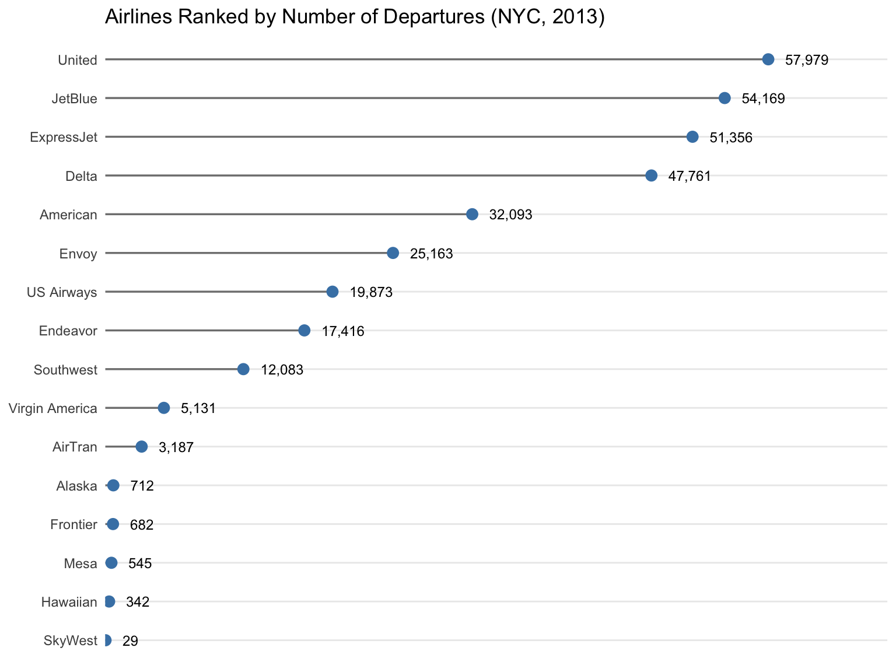
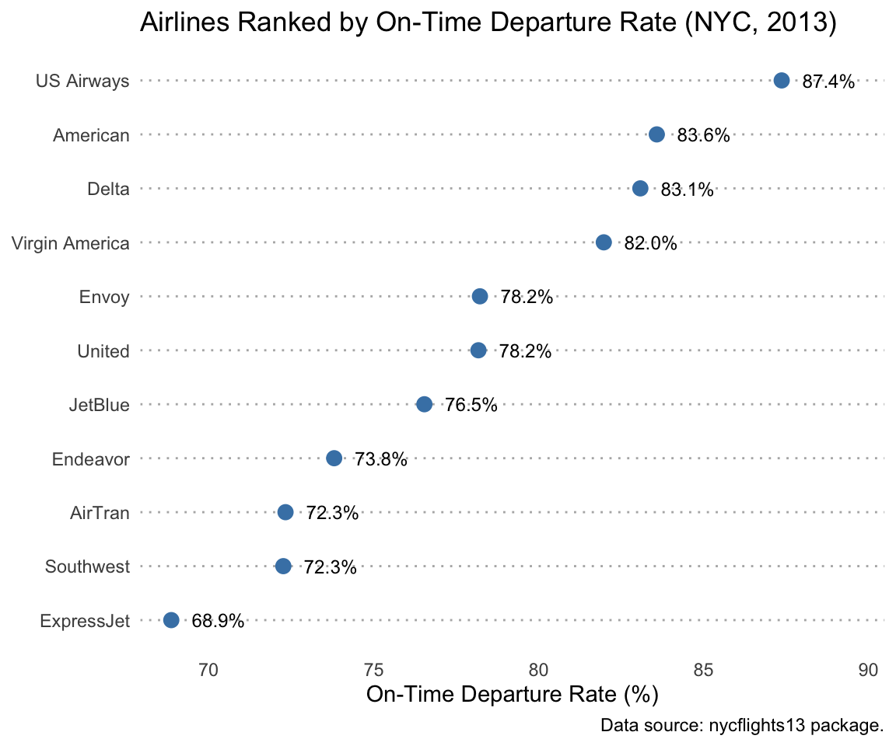
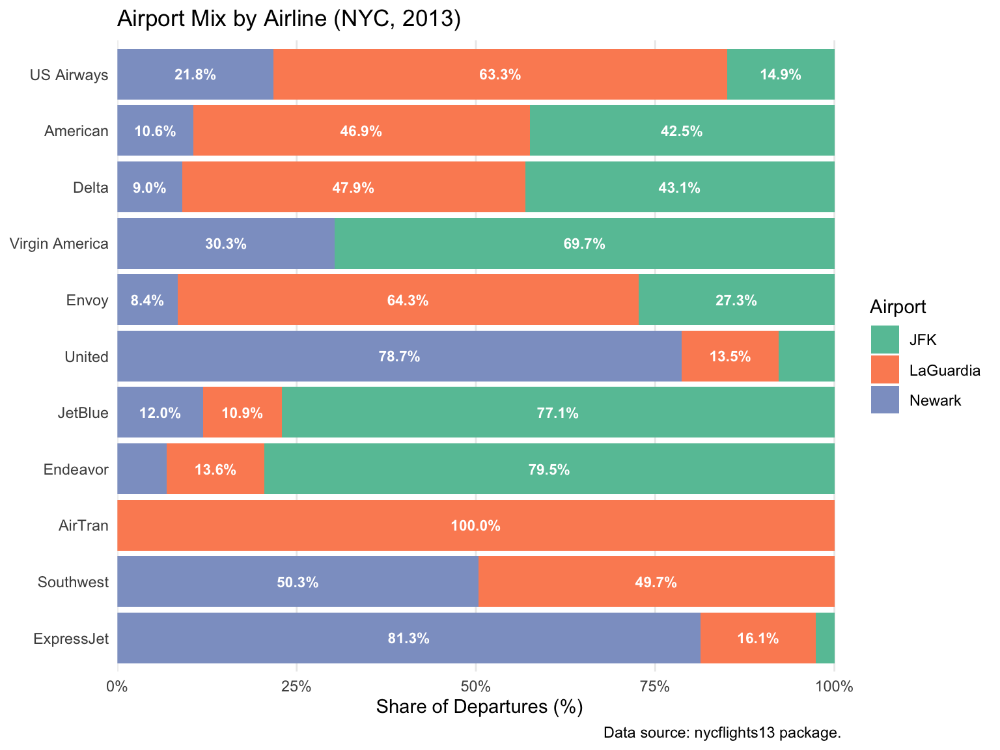
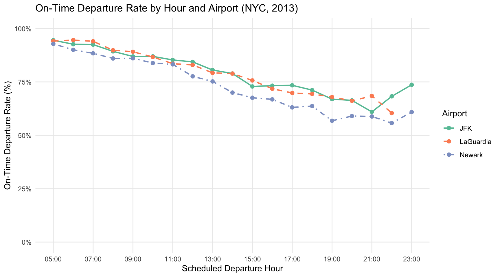
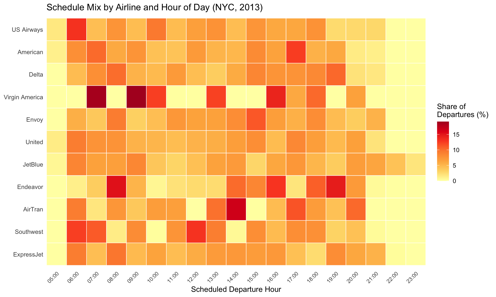
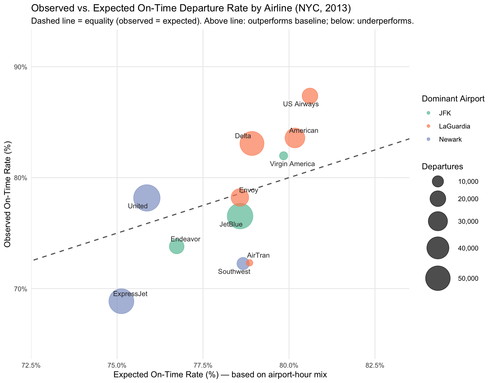

library(tidyverse)
library(nycflights13)
library(ggrepel)Week 06 Lab: Airline On-Time Departure Record from New York City-Area Airports
Visualizing On-Time Departures from New York City-Area Airports
Set up
3.1 Data Preparation
carriers <- read_csv("carriers.csv")
departures_before_join <-
flights |>
drop_na(dep_delay) |>
select(
airline_code = carrier,
airport_code = origin,
hour,
dep_delay
) |>
mutate(
airport = replace_values(
airport_code,
"EWR" ~ "Newark",
"LGA" ~ "LaGuardia",
"JFK" ~ "JFK"
),
on_time = dep_delay < 15
)
departures <-
departures_before_join |>
left_join(carriers, by = "airline_code") |>
select(
airline,
airport,
hour,
on_time
)
glimpse(departures)Rows: 328,521
Columns: 4
$ airline <chr> "United", "United", "American", "JetBlue", "Delta", "United", …
$ airport <chr> "Newark", "LaGuardia", "JFK", "JFK", "LaGuardia", "Newark", "N…
$ hour <dbl> 5, 5, 5, 5, 6, 5, 6, 6, 6, 6, 6, 6, 6, 6, 6, 5, 6, 6, 6, 6, 6,…
$ on_time <lgl> TRUE, TRUE, TRUE, TRUE, TRUE, TRUE, TRUE, TRUE, TRUE, TRUE, TR…Verifier Task — Join Integrity Check
# Checking dataset before Joining with csv file
rows_before_join <- nrow(departures_before_join)
rows_after_join <- nrow(departures)
cat("Rows before join:", rows_before_join, "\n")Rows before join: 328521 cat("Rows after join: ", rows_after_join, "\n")Rows after join: 328521 cat("Row count unchanged:", rows_before_join == rows_after_join, "\n\n")Row count unchanged: TRUE # Duplicate airline code check
duplicate_codes <- carriers |>
count(airline_code) |>
filter(n > 1)
cat("Duplicate codes in carriers.csv:", nrow(duplicate_codes), "\n")Duplicate codes in carriers.csv: 0 # Check for NA in columns
na_counts <- departures |>
summarise(across(everything(), ~ sum(is.na(.))))
print(na_counts)# A tibble: 1 × 4
airline airport hour on_time
<int> <int> <int> <int>
1 0 0 0 0cat(
"\nFinal tibble is complete with no missing vals:",
all(na_counts == 0),
"\n"
)
Final tibble is complete with no missing vals: TRUE cat("All data checks passed.\n")All data checks passed.What each check catches:
- Confirmed that no duplicates and missing values exist in the final
departurestibble, ensuring data integrity after the join.
3.2 Airlines Ranked by Departures
a. Dataset Summary — Departures by Airline in ascending Order of Departures
departures_by_airline <- departures |>
summarise(
n = n(),
on_time_pct = mean(on_time) * 100,
.by = airline
) |>
mutate(
airline = fct_reorder(airline, n)
) |>
arrange(desc(n))
glimpse(departures_by_airline)Rows: 16
Columns: 3
$ airline <fct> United, JetBlue, ExpressJet, Delta, American, Envoy, US Ai…
$ n <int> 57979, 54169, 51356, 47761, 32093, 25163, 19873, 17416, 12…
$ on_time_pct <dbl> 78.17313, 76.53455, 68.86245, 83.08034, 83.57897, 78.21802…Sorted Table Top 5 Airlines by Departures
slice_head(departures_by_airline, n = 5)Verifier Task — Count Check with No. of Rows in departures
class(departures_by_airline$airline)[1] "factor"cat(
"Sum of counts in departures_by_airline:",
sum(departures_by_airline$n),
"\n"
)Sum of counts in departures_by_airline: 328521 cat("Rows in departures: ", nrow(departures), "\n")Rows in departures: 328521 sum(departures_by_airline$n) == nrow(departures)[1] TRUEb. Lollipop Chart — Airlines Ranked by Number of Departures
ggplot(departures_by_airline, aes(x = n, y = airline)) +
geom_segment(
aes(x = 0, xend = n, y = airline, yend = airline),
colour = "grey50",
linewidth = 0.6
) +
geom_point(size = 3, colour = "steelblue") +
geom_text(
aes(label = scales::comma(n)),
hjust = 0,
nudge_x = 1500,
size = 3.2
) +
scale_x_continuous(
expand = expansion(mult = c(0, 0.15))
) +
theme_minimal() +
theme(
axis.title.x = element_blank(),
axis.text.x = element_blank(),
axis.ticks.x = element_blank(),
panel.grid.major.x = element_blank(),
panel.grid.minor.x = element_blank()
) +
labs(
title = "Airlines Ranked by Number of Departures (NYC, 2013)",
y = NULL
)
c. What is the advantage of placing the airline names on the y-axis rather than the x-axis in this plot?
Airline names are long character strings that overlap heavily with one another when placed on the x-axis, forcing diagonal or rotated tick labels that are harder to read. Placing them on the y-axis allows each label to sit on its own horizontal line, left-aligned and fully legible without rotation.
e. Advantage and Disadvantage of a lollipop chart over a bar chart:
The thin stem of a lollipop reduces visual clutter when many categories are plotted, our eyes are guided to the endpoint on the dot rather than being drawn to a large filled rectangle, making differences between similar counts easier to perceive.
A lollipop chart can make exact differences between values harder to judge because there is less visual area than in a bar chart. It is also less familiar to some readers than a traditional bar chart.
3.3 On-Time Departures by Airline
a-b. Remove <1000 Departures and Reorder Airlines by On-Time Percentage
departures_by_airline <- departures_by_airline |>
filter(n >= 1000) |>
mutate(airline = fct_reorder(airline, on_time_pct))
glimpse(departures_by_airline)Rows: 11
Columns: 3
$ airline <fct> United, JetBlue, ExpressJet, Delta, American, Envoy, US Ai…
$ n <int> 57979, 54169, 51356, 47761, 32093, 25163, 19873, 17416, 12…
$ on_time_pct <dbl> 78.17313, 76.53455, 68.86245, 83.08034, 83.57897, 78.21802…c. Cleveland Dot Plot — Airlines Ranked by On-Time Percentage
ggplot(departures_by_airline, aes(x = on_time_pct, y = airline)) +
geom_point(size = 3, colour = "steelblue") +
geom_text(
aes(label = sprintf("%.1f%%", on_time_pct)),
hjust = -0.2,
nudge_x = 0.3,
size = 3.2
) +
scale_x_continuous(
expand = expansion(mult = c(0.05, 0.15))
) +
labs(
title = "Airlines Ranked by On-Time Departure Rate (NYC, 2013)",
x = "On-Time Departure Rate (%)",
y = NULL,
caption = "Data source: nycflights13 package."
) +
theme_minimal() +
theme(
panel.grid.major.y = element_line(linetype = "dotted", colour = "grey70"),
panel.grid.major.x = element_blank(),
panel.grid.minor.x = element_blank()
)
d. Why is it acceptable for the x-axis of a Cleveland dot plot not to start at zero, whereas the x-axis of a bar chart or lollipop chart always should?
A Cleveland dot plot does not need to start at zero because the value is encoded by the position of the point, not by the length or area of a shape. In contrast, bar charts and lollipop charts use bar length or stem length to represent magnitude, so their axes should start at zero to avoid exaggerating differences.
e. Find the busiest airline from the previous task—the top lollipop of the previous plot—in this punctuality ranking.
# Identify the busiest airline from Section 3.2
busiest <- departures_by_airline |>
arrange(desc(n)) |>
slice(1) |>
pull(airline) |>
as.character()
# Find its rank in the punctuality ranking (1 = highest on-time pct)
punctuality_rank <- departures_by_airline |>
arrange(desc(on_time_pct)) |>
mutate(rank = row_number()) |>
filter(airline == busiest) |>
select(airline, n, on_time_pct, rank)
print(punctuality_rank)# A tibble: 1 × 4
airline n on_time_pct rank
<fct> <int> <dbl> <int>
1 United 57979 78.2 6# Identify the bottom-ranked airline for later reference
bottom_airline <- departures_by_airline |>
arrange(on_time_pct) |>
slice(1) |>
select(airline, on_time_pct, n)
cat("\nBottom-ranked airline by on-time percentage:\n")
Bottom-ranked airline by on-time percentage:print(bottom_airline)# A tibble: 1 × 3
airline on_time_pct n
<fct> <dbl> <int>
1 ExpressJet 68.9 51356Observations:
- The busiest airline by departure volume is United Airlines, with the most departures shown in section 3.2 does not necessarily lead the punctuality ranking, its raw on-time percentage places it in the middle of the field.
- The airline at the very bottom of the punctuality ranking its low raw on-time rate may be a result of the airports and time slots it operates from, rather than by scheduling performance alone.
Verifier task — On-Time Percentage Cross-Check for Busiest Airline
# Identify the busiest airline by total departures
busiest_airline <- departures_by_airline |>
arrange(desc(n)) |>
slice(1) |>
pull(airline) |>
as.character()
# On-time percentage from departures_by_airline (summarised tibble)
pct_from_summary <- departures_by_airline |>
filter(airline == busiest_airline) |>
pull(on_time_pct)
# On-time percentage computed directly from raw departures tibble
pct_from_raw <- departures |>
filter(airline == busiest_airline) |>
summarise(on_time_pct = mean(on_time) * 100) |>
pull(on_time_pct)
cat("Busiest airline: ", busiest_airline, "\n")Busiest airline: United cat("On-time % from departures_by_airline:", round(pct_from_summary, 4), "\n")On-time % from departures_by_airline: 78.1731 cat("On-time % computed from departures: ", round(pct_from_raw, 4), "\n")On-time % computed from departures: 78.1731 cat(
"Do the two percentages match? ",
all.equal(pct_from_summary, pct_from_raw),
"\n"
)Do the two percentages match? TRUE 3.4 Airport Mix by Airline
a. Compute Airport Mix for Each Airline with ≥ 1,000 Departures
airport_mix <- departures |>
# Keep only airlines with at least 1,000 departures
group_by(airline) |>
filter(n() >= 1000) |>
ungroup() |>
# Compute departure count per airline-airport combination
summarise(
n = n(),
.by = c(airline, airport)
) |>
# Compute percentage of each airline's departures from each airport
group_by(airline) |>
mutate(pct = n / sum(n) * 100) |>
ungroup() |>
# Apply same factor ordering as Section 3.3 (ascending on-time pct)
mutate(
airline = factor(airline, levels = levels(departures_by_airline$airline))
)
glimpse(airport_mix)Rows: 29
Columns: 4
$ airline <fct> United, United, American, JetBlue, Delta, JetBlue, ExpressJet,…
$ airport <chr> "Newark", "LaGuardia", "JFK", "JFK", "LaGuardia", "Newark", "L…
$ n <int> 45652, 7837, 13642, 41761, 22857, 6483, 8255, 15063, 4490, 592…
$ pct <dbl> 78.738854, 13.516963, 42.507712, 77.093910, 47.857038, 11.9681…Verifier Task — Ensure all Airport Percentages Sum to 100%
# Compute per-airline percentage sums
pct_sums <- airport_mix |>
summarise(total_pct = sum(pct), .by = airline) |>
arrange(airline)
print(pct_sums)# A tibble: 11 × 2
airline total_pct
<fct> <dbl>
1 ExpressJet 100
2 Southwest 100
3 AirTran 100
4 Endeavor 100
5 JetBlue 100
6 United 100
7 Envoy 100
8 Virgin America 100
9 Delta 100
10 American 100
11 US Airways 100# Check each airline's percentages sum to 100 within floating-point tolerance
all_sum_to_100 <- all(
sapply(pct_sums$total_pct, function(x) isTRUE(all.equal(x, 100)))
)
cat("\nAll airlines sum to 100% (within tolerance):", all_sum_to_100, "\n")
All airlines sum to 100% (within tolerance): TRUE b-c. Labelled Stacked Bar Chart — Airport Mix by Airline
ggplot(
airport_mix,
aes(x = pct, y = airline, fill = airport)
) +
geom_col() +
geom_text(
aes(label = ifelse(pct >= 8, sprintf("%.1f%%", pct), "")),
position = position_stack(vjust = 0.5),
size = 3,
colour = "white",
fontface = "bold"
) +
scale_fill_brewer(palette = "Set2", name = "Airport") +
scale_x_continuous(
expand = expansion(mult = c(0, 0.01)),
labels = scales::label_percent(scale = 1)
) +
labs(
title = "Airport Mix by Airline (NYC, 2013)",
x = "Share of Departures (%)",
y = NULL,
caption = "Data source: nycflights13 package."
) +
theme_minimal() +
theme(
panel.grid.major.y = element_blank(),
panel.grid.minor.x = element_blank()
)
d. Based on the stacked bar chart, which airport does the busiest airline depart from most, and how lopsided is that share?
Based on the stacked bar chart, the busiest airline, United, departs primarily from Newark, which accounts for 78.7% of its departures. This is a highly lopsided distribution, as fewer than a quarter of its flights depart from JFK and LaGuardia combined. Therefore, United’s on-time performance may be strongly influenced by the operating conditions at Newark, its dominant airport.
3.5 On-Time Departures by Airport
a. Compute On-Time Departure Percentage by Airport
ontime_by_airport <- departures |>
summarise(
n = n(),
on_time_pct = mean(on_time) * 100,
.by = airport
) |>
arrange(desc(on_time_pct))
ontime_by_airportVerifier Task — Weighted vs. Unweighted Airport Rate Consistency
# Overall on-time percentage computed directly from raw departures
overall_pct_raw <- mean(departures$on_time) * 100
# Departure-weighted mean of the three airport on-time percentages
overall_pct_weighted <- ontime_by_airport |>
summarise(weighted_mean = weighted.mean(on_time_pct, w = n)) |>
pull(weighted_mean)
# Plain unweighted average of the three airport percentages
overall_pct_unweighted <- mean(ontime_by_airport$on_time_pct)
cat(
"Overall on-time % from raw departures: ",
round(overall_pct_raw, 4),
"\n"
)Overall on-time % from raw departures: 77.8054 cat(
"Departure-weighted mean of airport rates: ",
round(overall_pct_weighted, 4),
"\n"
)Departure-weighted mean of airport rates: 77.8054 cat(
"Unweighted mean of airport rates: ",
round(overall_pct_unweighted, 4),
"\n"
)Unweighted mean of airport rates: 77.9482 cat(
"Weighted mean matches overall rate:",
isTRUE(all.equal(overall_pct_raw, overall_pct_weighted)),
"\n"
)Weighted mean matches overall rate: TRUE cat(
"Discrepancy (unweighted - raw): ",
round(overall_pct_unweighted - overall_pct_raw, 4),
"percentage points\n\n"
)Discrepancy (unweighted - raw): 0.1428 percentage pointsWhy the unweighted average is a mistake
- An unweighted average treats all three airports as equally important regardless of how many departures they handle. The weighted mean accounts for the number of departures at each airport, making it representative of the overall on-time rate across all flights.
b. Is the dominant departure airport of the busiest airline also the airport with the lowest on-time percentage?
Yes. The busiest airline’s dominant airport is Newark, and Newark has the lowest on-time departure percentage among the three airports. This suggests that part of the airline’s raw punctuality ranking may reflect where it flies rather than its own schedule-adjusted performance. Because most of its departures originate from a less punctual airport, its observed on-time percentage may be lower even if the airline’s operations are not inherently less punctual than those of its competitors. Therefore, the raw ranking alone may not provide a fair comparison of airline performance.
3.6 On-Time Departures by Time of Day and Airport
Data Preparation
ontime_hour_airport <- departures |>
summarise(
n = n(),
on_time_pct = mean(on_time) * 100,
.by = c(airport, hour)
) |>
arrange(airport, hour)
glimpse(ontime_hour_airport)Rows: 56
Columns: 4
$ airport <chr> "JFK", "JFK", "JFK", "JFK", "JFK", "JFK", "JFK", "JFK", "J…
$ hour <dbl> 5, 6, 7, 8, 9, 10, 11, 12, 13, 14, 15, 16, 17, 18, 19, 20,…
$ n <int> 746, 6199, 6973, 10644, 6414, 4634, 2950, 4987, 4219, 7698…
$ on_time_pct <dbl> 94.50402, 92.66011, 92.47096, 89.30853, 86.91924, 86.94432…Line-and-Point Plot — On-Time Rate by Hour and Airport
ggplot(
ontime_hour_airport,
aes(x = hour, y = on_time_pct, colour = airport, linetype = airport)
) +
geom_line(linewidth = 0.8) +
geom_point(size = 2) +
scale_x_continuous(
breaks = seq(5, 23, by = 2),
labels = function(x) sprintf("%02d:00", x)
) +
scale_y_continuous(
labels = scales::label_percent(scale = 1),
limits = c(0, 100)
) +
scale_colour_brewer(palette = "Set2", name = "Airport") +
scale_linetype_manual(
name = "Airport",
values = c("JFK" = "solid", "LaGuardia" = "dashed", "Newark" = "dotdash")
) +
labs(
title = "On-Time Departure Rate by Hour and Airport (NYC, 2013)",
x = "Scheduled Departure Hour",
y = "On-Time Departure Rate (%)"
) +
theme_minimal() +
theme(
panel.grid.minor = element_blank()
)
Verifier Task — Time-of-Day Decline with reference to Yahoo News Article
The within-day decline in on-time departure rates observed in Figure 3.6 is a norm in the airline industry. Yahoo Travel (2026) quotes Anton Radchenko, CEO of AirAdvisor, who explains the mechanism directly, “A delay on a 7 a.m. flight does not disappear and follows the aircraft and crew for the rest of the day. By the afternoon, even small disruptions can compound quickly because there is little room left in the system to absorb them.”
Andrew Schmertz, CEO of Hopscotch Air, adds that, “one delay can cause a domino effect” because “planes don’t make money sitting on the ground”, and airlines therefore schedule rotations as tightly as possible, leaving minimal buffer to absorb early disruptions before they cascade into later flights.
This is consistent with the pattern in Figure 3.6, where on-time rates across all three NYC airports are highest in the early morning and fall steadily into the evening. The decline is not a dataset artefact but it reflects real operational mechanics, including the aircraft, crews, and gates are reused across multiple rotations, so a late inbound arrival compresses the turnaround window for the next outbound departure and propagates the delay forward. An airline scheduled heavily into late-day departure slots inherits a structurally lower on-time rate for reasons unrelated to its own scheduling quality, making hour-of-day a confounding variable.
source: Yahoo Travel, 2026
c. Color + Linetype
Mapping airport to both colour and linetype is a deliberate redundancy that serves two distinct protective purposes. The linetype ensures the plot remains interpretable for readers with colour-vision deficiency, who may be unable to distinguish the three coloured lines from one another, while the solid, dashed, and dot-dash patterns remain separable regardless of how colour is perceived.
Also, the linetype mapping preserves legibility when the figure is shown in black and white.
3.7 Schedule Mix by Airline
Data Preparation
schedule_mix <- departures |>
# Keep only airlines with at least 1,000 departures
group_by(airline) |>
filter(n() >= 1000) |>
ungroup() |>
# Count departures per airline-hour
summarise(n = n(), .by = c(airline, hour)) |>
# Add zero rows for hours with no departures (5 to 23)
complete(
airline,
hour = 5:23,
fill = list(n = 0)
) |>
# Compute percentage of each airline's departures in each hour
group_by(airline) |>
mutate(pct = n / sum(n) * 100) |>
ungroup() |>
# Apply on-time ranking factor order from Section 3.3
mutate(
airline = factor(airline, levels = levels(departures_by_airline$airline))
)
glimpse(schedule_mix)Rows: 209
Columns: 4
$ airline <fct> AirTran, AirTran, AirTran, AirTran, AirTran, AirTran, AirTran,…
$ hour <dbl> 5, 6, 7, 8, 9, 10, 11, 12, 13, 14, 15, 16, 17, 18, 19, 20, 21,…
$ n <int> 0, 294, 58, 233, 123, 217, 212, 0, 317, 525, 5, 148, 366, 220,…
$ pct <dbl> 0.0000000, 9.2249765, 1.8198933, 7.3109507, 3.8594289, 6.80891…Verifier Task — Ensure all Schedule Percentages Sum to 100%
schedule_pct_sums <- schedule_mix |>
summarise(total_pct = sum(pct), .by = airline) |>
arrange(airline)
print(schedule_pct_sums)# A tibble: 11 × 2
airline total_pct
<fct> <dbl>
1 ExpressJet 100
2 Southwest 100
3 AirTran 100
4 Endeavor 100
5 JetBlue 100
6 United 100
7 Envoy 100
8 Virgin America 100
9 Delta 100
10 American 100
11 US Airways 100all_schedule_sum_to_100 <- all(
sapply(schedule_pct_sums$total_pct, function(x) isTRUE(all.equal(x, 100)))
)
cat(
"\nAll airline schedule percentages sum to 100% (within tolerance):",
all_schedule_sum_to_100,
"\n"
)
All airline schedule percentages sum to 100% (within tolerance): TRUE Heatmap — Schedule Mix by Airline and Hour
ggplot(schedule_mix, aes(x = hour, y = airline, fill = pct)) +
geom_tile(colour = "white", linewidth = 0.3) +
scale_fill_distiller(
palette = "YlOrRd",
direction = 1,
name = "Share of\nDepartures (%)",
na.value = "grey90"
) +
scale_x_continuous(
breaks = 5:23,
labels = function(x) sprintf("%02d:00", x),
expand = expansion(0)
) +
labs(
title = "Schedule Mix by Airline and Hour of Day (NYC, 2013)",
x = "Scheduled Departure Hour",
y = NULL
) +
theme_minimal() +
theme(
axis.text.x = element_text(angle = 45, hjust = 1, size = 8),
panel.grid = element_blank(),
legend.position = "right"
)
- The busiest airline’s schedule mix is broad United Airlines shows a relatively even spread of departures across morning through midday hours with no extreme concentration in the evening slots where on-time performance tends to decline. Its schedule does not suggest a heavy tilt toward the worst-performing hours, meaning the time-of-day mix is likely not the primary explanation for its results raw punctuality rank. The airport mix, where its overwhelming concentration at Newark, the lowest-punctuality airport, remains a stronger candidate for explaining its position.
3.8 Observed versus Expected On-Time Departure Percentage
Slot Baseline On-Time Percentage by Airport and Hour
slots <- departures |>
summarise(
n = n(),
baseline_on_time_pct = mean(on_time) * 100,
.by = c(airport, hour)
)
slotsairline_performance <- departures |>
left_join(slots, by = c("airport", "hour")) |>
summarise(
n = n(),
on_time_pct = mean(on_time) * 100,
expected_on_time_pct = mean(baseline_on_time_pct),
.by = airline
) |>
filter(n >= 1000) |>
left_join(
departures |>
count(airline, airport) |>
slice_max(n, n = 1, by = airline, with_ties = FALSE) |>
select(airline, dominant_airport = airport),
by = "airline"
)
airline_performanceBubble Plot — Observed vs. Expected On-Time Percentage
ggplot(
airline_performance,
aes(
x = expected_on_time_pct,
y = on_time_pct,
size = n,
colour = dominant_airport
)
) +
geom_abline(
slope = 1,
intercept = 0,
linetype = "dashed",
colour = "grey40",
linewidth = 0.7
) +
geom_point(alpha = 0.7) +
scale_size_area(
name = "Departures",
max_size = 16,
labels = scales::comma
) +
scale_colour_brewer(
palette = "Set2",
name = "Dominant Airport"
) +
geom_text_repel(
aes(label = airline),
size = 3.2,
colour = "grey20",
box.padding = 0.4,
point.padding = 0.3,
max.overlaps = Inf,
show.legend = FALSE
) +
scale_x_continuous(
labels = scales::label_percent(scale = 1),
limits = c(73, 83)
) +
scale_y_continuous(
labels = scales::label_percent(scale = 1),
limits = c(65, 92)
) +
labs(
title = "Observed vs. Expected On-Time Departure Rate by Airline (NYC, 2013)",
subtitle = "Dashed line = equality (observed = expected). Above line: outperforms baseline; below: underperforms.",
x = "Expected On-Time Rate (%) — based on airport-hour mix",
y = "Observed On-Time Rate (%)"
) +
theme_minimal() +
theme(
panel.grid.minor = element_blank()
)
3.9 Summary and Interpretation
Busiest Airline Summary United Airlines, the busiest airline, is positioned near the middle of the raw on-time ranking but lies above the dashed equality line in Figure 3.8, indicating that it outperforms its airport-hour baseline. This suggests that its relatively modest raw on-time percentage is influenced by its heavy concentration at Newark and the times at which it operates. After accounting for these structural factors, United performs better than expected, showing that the raw punctuality ranking understates its performance.
Airline at the Bottom of the Punctuality Ranking Summary ExpressJet was the lowest-ranked airline in the raw punctuality ranking, with an on-time percentage of 68.9%. Like United, most of its departures came from Newark, which had the lowest airport-level on-time percentage among the three airports. However, ExpressJet still performed below its airport-hour baseline, suggesting that its low punctuality cannot be explained by airport and schedule mix alone. This indicates that other operational factors may also have contributed to its poorer performance.
The five busiest airlines were United, JetBlue, ExpressJet, Delta and American. Among them, United, Delta and American performed better than expected based on their airport-hour mix, while JetBlue and ExpressJet performed worse than expected. This shows that airlines operating under similar conditions can still achieve very different levels of punctuality.
Are the two airlines facing similar airport-hour circumstances? If so, what does their difference in observed on-time percentage suggest? Yes, both United and ExpressJet share broadly similar airport-hour circumstances as both are Newark-dominant, and their expected on-time percentages, 75.9% for United and 75.1% for ExpressJet, differ by less than one percentage point, confirming that the structural baseline each airline inherits from its schedule is nearly identical.
Despite operating under virtually the same airport-hour conditions, however, United’s observed on-time rate of 78.2% exceeds ExpressJet’s 68.9%, with a difference of 9.3 percentage points.
This gap is unlikely to be explained by differences in airport mix or hour-of-day distribution alone, as both airlines operate under very similar airport-hour conditions. The difference suggests that airline-specific factors may contribute to the variation in punctuality. ExpressJet’s observed on-time rate remains below its expected baseline, while United exceeds its baseline, indicating that the two airlines perform differently despite facing similar operating environments.
a. What does the raw on-time departure ranking reveal, and what does it obscure once airport-hour circumstances are considered?
The raw on-time departure ranking reflects the punctuality that passengers actually experienced, showing which airlines had higher or lower observed on-time rates. For example, ExpressJet had one of the lowest observed on-time percentages, while airlines such as US Airways ranked near the top.
However, the raw ranking does not account for differences in airport and departure-hour exposure. Airlines that operate heavily from lower-punctuality airports or during less punctual times of the day may appear worse than they actually are. After accounting for airport-hour circumstances, United performs better than its raw ranking suggests because it exceeds its expected baseline, while ExpressJet remains below its expected baseline. This shows that part of the raw ranking reflects where and when airlines operate, while another part reflects differences in airline-specific performance.
b. Reflection
Bao Quan
While working through the lab, I found the process of adjusting for confounding variables like airport and hour mix to be interesting for each section changing my perspective of an airline like united to be from a underperforming average airline, to a decent one but was penelized by its dominant airport. It highlighted how raw performance metrics can be misleading without context, and how important it is to consider structural factors when evaluating operational performance. The bubble plot in section 3.8 was especially effective in visually conveying the relationship between observed and expected on-time rates, making it clear which airlines were outperforming or underperforming their baselines, and what is the actual cause of the raw punctuality rank. It was a good exercise in critical thinking and data visualization to uncover insights that are not immediately apparent from the raw data alone.
Gerald
One thing that stood out to me was the Cleveland dot plot in Section 3.3. I initially thought the busiest airline would also be one of the most punctual, but the plot showed that flight volume and punctuality are not necessarily related. It also helped me understand that not all graphs need to start at zero, as removing the zero baseline made the small differences in on-time percentages much easier to compare. This changed how I think about choosing the right visualization for different types of data.
Jia Jia
This lab helped me understand how data visualisation can show patterns that are not obvious from looking at tables alone. At first, I thought the airlines with the highest on-time percentages were simply performing better than the others. However, after looking at the airport mix chart and the observed versus expected bubble plot, I realised that where and when an airline operates can have a big impact on its ranking. The bubble plot was the most interesting part for me because it changed my impression of United Airlines and showed that its performance was actually better than expected once airport and time factors were considered. thank you!
Adam
one thing that stood out to me was the Observed versus Expected On-Time Departure in Section 3.8. At first i thought that the raw on time percentage was enough to judge if an airline is punctual. After seeing the equality line, I realised that some airlines were performing better or worse than expected based on the airports and hours they flew. This changed how I understood the ranking as it showed that the raw percentage is useful, but it does not show the full context behind each airline’s schedule.
Jun Kiat
One thing that stood out to me was how the same airline could look different depending on the plot being used. At first, United looked like an average airline based on the raw on-time ranking, but the airport mix and observed versus expected bubble plot showed that it was operating heavily from Newark, which had the lowest airport-level on-time percentage. This helped me understand that raw percentages can hide important context, especially when airlines do not operate from the same airports or at the same times. The bubble plot in Section 3.8 was the most useful for me because it clearly showed the difference between actual performance and what was expected based on airport-hour conditions.
4.1 Reflect on AI Use
Our team used ChatGPT as the chosen chat-based AI tool for this lab. One useful AI suggestion was helping us structure the data transformation and verification steps, such as creating the departures tibble, checking join integrity, and validating that percentage calculations summed correctly. The AI also assisted with constructing several visualisations, including the lollipop chart, Cleveland dot plot, heatmap, and observed-versus-expected bubble plot.
One AI response that required checking was the ordering of airlines in some of the plots. The team verified the lab requirements and confirmed that airlines needed to follow the specified ranking order, such as ordering by on-time percentage in Sections 3.3–3.8. We adjusted the factor levels and checked the resulting plots to ensure they matched the intended rankings.
4.2 Roles and Contributions
Adam: Coder
Adam typed and edited the canonical QMD file, implemented the data preparation and visualization code, ensured all code chunks rendered correctly, and generated the final HTML submission.Bao Quan: AI Liaison
Bao Quan interacted with ChatGPT throughout the lab, maintained the AI interaction log, reviewed AI-generated suggestions, and checked that any AI-assisted code or explanations were consistent with the lab requirements.Jia Jia: Navigator
Jia Jia monitored the task requirements, coordinated the team’s workflow, ensured that all sections of the lab were completed, and helped guide the interpretation of the visualizations.Jun Kiat: Constructive Critic and Reporter
Jun Kiat reviewed the team’s written explanations, verifier notes, and visualizations for clarity and consistency. Jun Kiat also prepared the written interpretations and communicated the team’s findings during discussions and checkpoints.Gerald: Verifier
Gerald completed the verifier tasks throughout the lab, including checking join integrity, validating airport and schedule percentages, verifying weighted and unweighted averages, and confirming consistency between summary statistics and values calculated directly from the departures dataset.